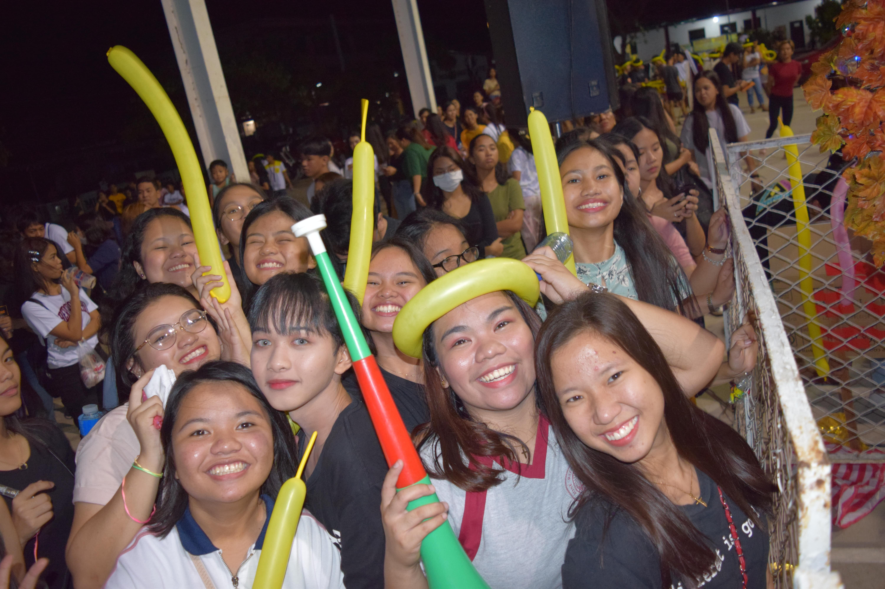
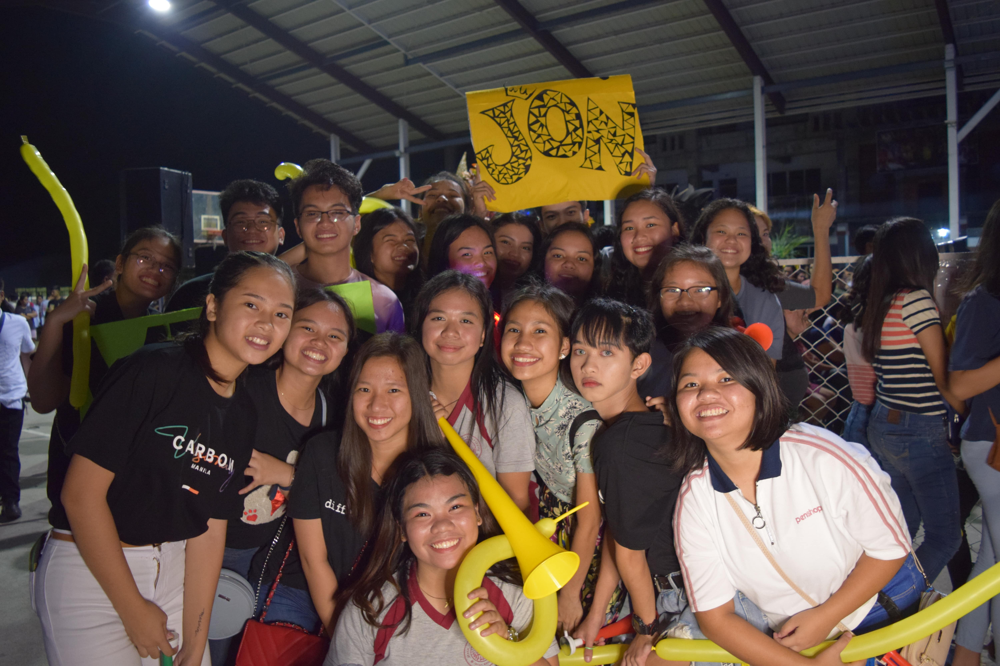
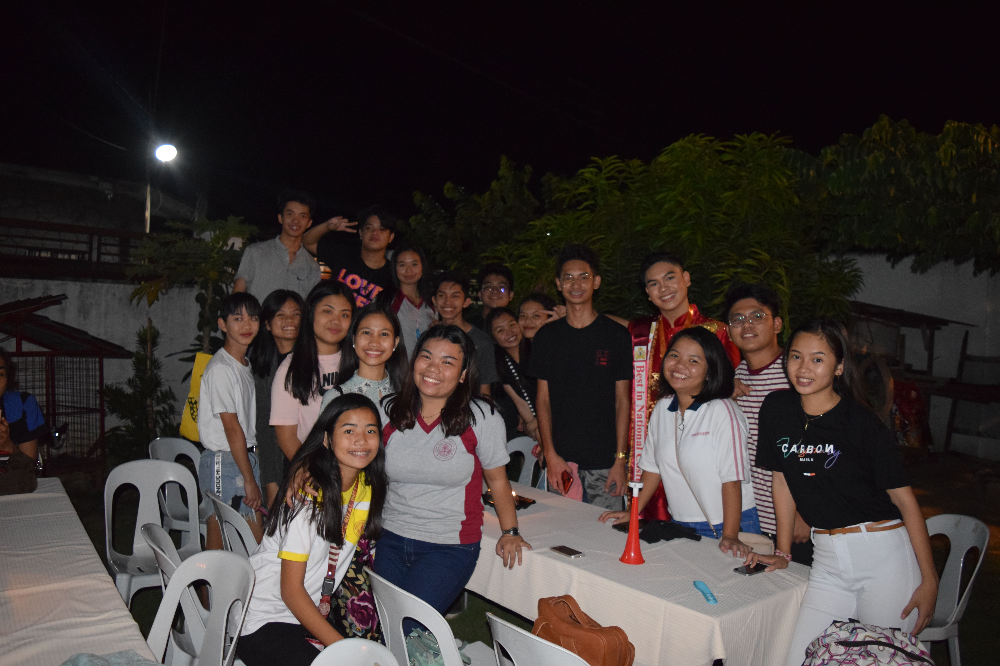
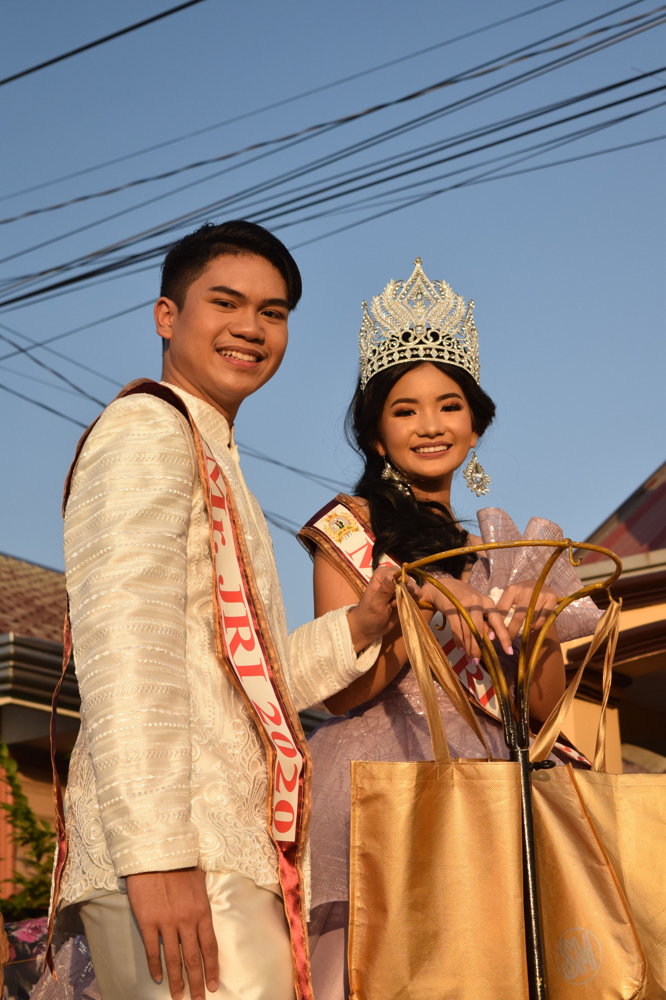

WHOOOOOOOOO!

JON! JON! JON! JON!
BARCARSEEEEEEEEEEEEEE!
The winning duo with our Jon!

The afterparty after coronation night

Jon along with Erin during the parade
The Diamond Database
10-DIAMOND... The proudest and most supportive section you'll probably see, and this section clearly shows that with the pictures of coronation night for our prince, Jon Barcarse as he wins the crown of Mr. JRI along with Erin Biloro as Ms. JRI.
WHOOOOOOOOO!
JON! JON! JON! JON!
BARCARSEEEEEEEEEEEEEE!
The winning duo with our Jon!
The afterparty after coronation night
Jon along with Erin during the parade